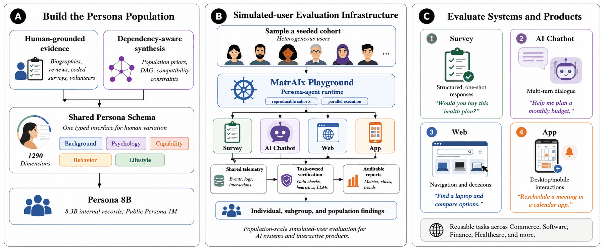
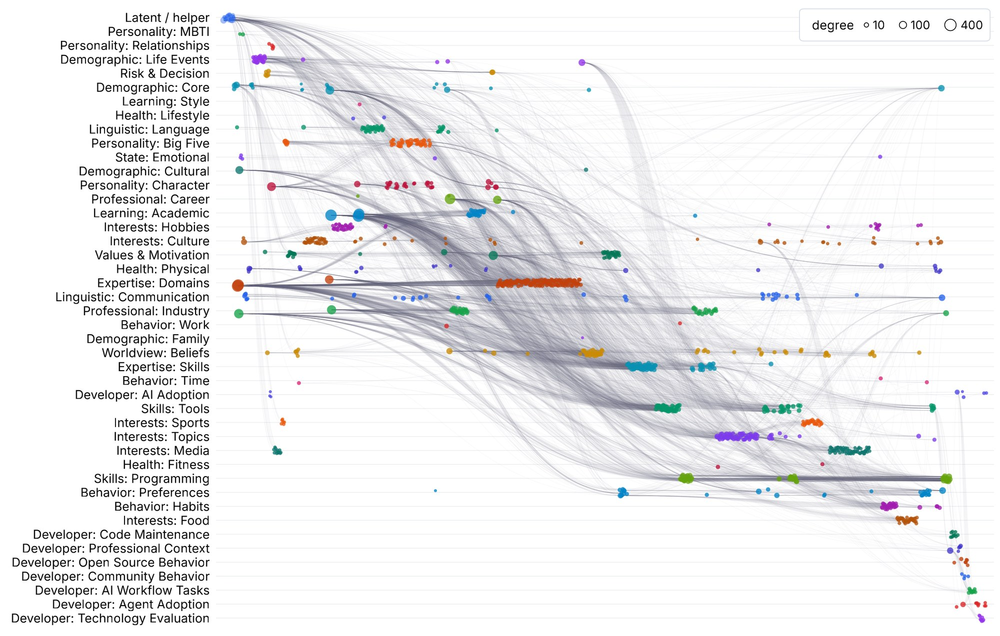
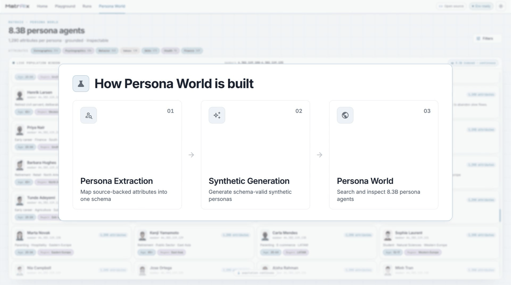
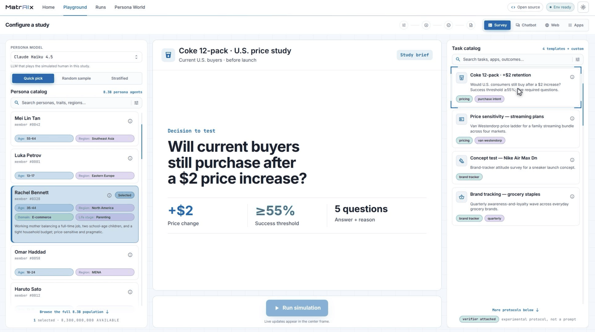
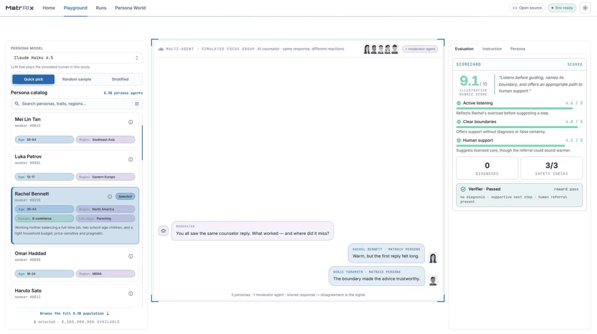
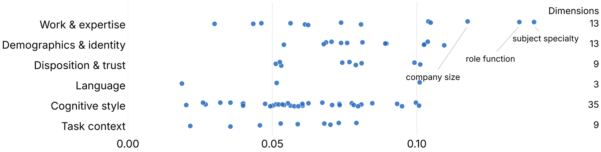
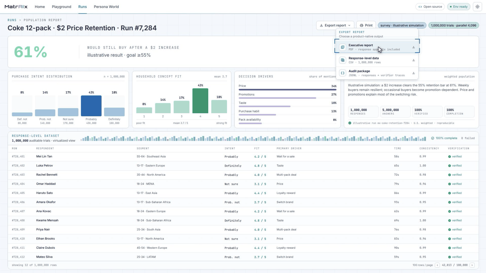
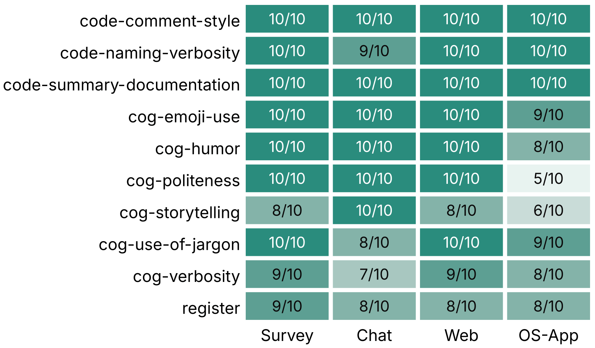

Imagine you sell a soft drink and you are weighing a $2 price increase on a 12 pack. Will your regular buyers stay? The traditional way to find out is a market study: recruit hundreds of people, pay them, and wait weeks for results. It works, but it is slow and expensive, so most teams run studies rarely, late, or not at all.
AI products have the same problem in a sharper form. A coding assistant can pass every automated test and still frustrate half of its users, because those tests measure whether the answer is correct, not how the product feels to use. A beginner wants explanations, small steps, and reassurance. An expert wants two terse lines and no hand holding. The same product can delight one of them and annoy the other, and an average score hides both.
MatrAIx proposes a middle path: before you test with real people, test with simulated ones. AI agents play the roles of realistic, varied users. They take your survey, argue with your chatbot, shop on your website, and click through your app. Then they report back, and you can read every individual interaction to see exactly why a certain kind of user gave up. For the report we ran 18,189 of these trials across eight example studies.
1. The three pieces of MatrAIx
MatrAIx is built from three parts that plug into each other.
A population to draw people from. Persona 8B is a collection of 8.3 billion personas. Each persona is a detailed description of a fictional but realistic person: their age, region, languages, job, personality, skills, habits, and interests, organized into 1,290 standard attributes. A persona becomes a persona agent when an AI model is asked to play that person.
A place for them to act. The MatrAIx Playground runs the studies. You describe the audience you care about, MatrAIx pulls matching personas from the population, and each one independently works through your task while the system records what it thought, said, and did.
A library of ready studies. MatrAIx Applications holds 1,010 reusable study designs across more than 25 industries, including commerce, software, finance, and healthcare. Each one specifies who takes part, what they try to do, and how the result is checked.

2. Watch it in action
The quickest way to understand MatrAIx is to see one study run end to end. The demo below sets up a question, picks a cohort of personas, lets them loose, and walks through the report that comes back.
The MatrAIx demo: from a product question to a population of simulated users to an auditable report.
3. Where 8.3 billion personas come from
A persona in MatrAIx is more than a one line character sketch. Here is one from the Playground: "Rachel Bennett, 35 to 44, North America. Working mother balancing a full time job, two school age children, and a tight household budget. Price sensitive and pragmatic." Behind that summary sit hundreds of filled attributes that shape how she behaves in a study.
The population is built in two complementary ways.
Some personas are grounded in real people's traces. About 600,000 of the released records were extracted from public sources: Wikipedia biographies, Amazon review histories, the Stack Overflow Developer Survey, the General Social Survey, the PRISM Alignment study, and 355 volunteers who filled out the MatrAIx Persona Survey themselves. Every record is stripped of names and contact details. What remains is the shape of a real life: what this person knows, values, buys, and struggles with.
The rest are synthesized, carefully. You cannot just roll dice for each attribute independently, or you get a retired surgeon who is also 19 years old. MatrAIx samples each attribute in a way that respects how attributes depend on each other, using published population statistics. Someone's education level depends on their age. Their English proficiency depends on their region and first language. Impossible combinations are filtered out, while merely unusual ones are kept, because real populations contain unusual people. The web of dependencies behind that sampling covers all 1,290 attributes, and the paper draws it in full:


From the full 8.3 billion records, we released a quality filtered set of about one million personas, roughly 600,000 grounded and 400,000 synthetic, as the public Persona 1M dataset for research use.
4. Four kinds of studies
Different product questions need different settings, so the Playground offers four environments that a persona agent can act in.
Survey
Personas answer questionnaires and explain their reasoning. Would this cohort still buy a 12 pack after a $2 price increase? How many would try a new sneaker concept?
AI Chatbot
Personas hold real conversations with an assistant or support bot. Do users keep going after the bot gives a wrong answer and corrects itself? How much does a slow reply hurt satisfaction?
Web
Personas browse actual websites, searching, comparing, and choosing. Can a shopper on a tight budget find a laptop they trust, and how long does it take them?
App
Personas operate desktop and mobile apps with mouse, keyboard, and touch. Can users discover a new feature? Can they find and change their privacy settings?
Setting up a study takes three choices: who takes part, what they try to do, and what counts as success. The Playground keeps a record of all three, so a study can be rerun after you change your product and the results compared fairly.

5. What comes back
Each trial is recorded in full: the persona, the conversation or click path, the outcome, and an automatic check of whether the task's requirements were met. On top of those individual records, MatrAIx builds a population report: the headline number, how it splits across groups, and a table where every single response can be opened and read.

The point of the report is not one number. It is the differences underneath. Take the report's meal planning study: 1,000 personas per AI model each asked the same assistant for a meal plan tailored to their needs, in conversations averaging about seven turns, and then rated how likely they were to follow it. Empty nesters said they would follow their plan far more often than people in the middle of a career change, 66% against 46%. The report keeps the fine print attached: none of these gaps stayed statistically significant after correction, so they are leads for a larger study, not settled facts.

Aggregate scores hide exactly this kind of structure, and it is often where the product decision lives.

6. Can you trust simulated people?
Only as far as you check them, which is why a large part of the report is validation. Three results matter most.
Personas stay in character. We ran a controlled study of 400 trials across ten behavioral traits and all four environments. A persona assigned "impatient," for example, should act impatient, and a persona assigned the opposite should not. The assigned behavior showed up, or was correctly absent, in 366 of 400 trials, or 91.5%. Surveys, conversations, and web browsing were the easier settings, with 92% to 96% of trials succeeding; operating full desktop apps was the hardest, at 83%.

Extracted personas match their sources. Six human raters reviewed personas extracted from real material against the original sources and scored their quality at 4.135 out of 5 on average. Two AI judges scored the full set of 1,000, and their ratings tracked the human ones closely.
Findings hold across AI models. Persona agents were powered by three different models: Claude Opus 4.8, GPT 5.5, and Claude Haiku 4.5. Where a persona trait had a clear connection to the task, all three models recovered the same group ordering. The clearest case was a financial research task in which every persona carried an assigned trust orientation, from hostile to trusting.
The report is equally direct about limits. Simulated personas are imperfect models of human behavior. Important findings should be checked with more than one AI model, traced back to the underlying interactions, and confirmed with real humans before they drive consequential decisions.
7. Try it
Everything described here is public. You can browse the population and run a study yourself:
- arXiv paper, the full paper this post summarizes.
- The MatrAIx Playground, where the studies in this post were configured and run.
- Persona World, the browser for the persona population.
- Persona 1M on Hugging Face, the released dataset of about one million personas.
- Our position paper, on why human simulation is the next step for AI agents.
Evidence note. This post summarizes the MatrAIx technical report "Simulating the World with 8.3 Billion Persona Agents" for a general audience. All numbers are quoted from the report: 8.3 billion records, 1,290 attributes, 1,010 tasks, 18,189 trials, the 400 trial adherence study (91.5%), and the extraction quality ratings (4.135/5). The Playground screenshots show the product interface with illustrative data; the charts are reproduced directly from the report's figures; the demo video shows a live run.